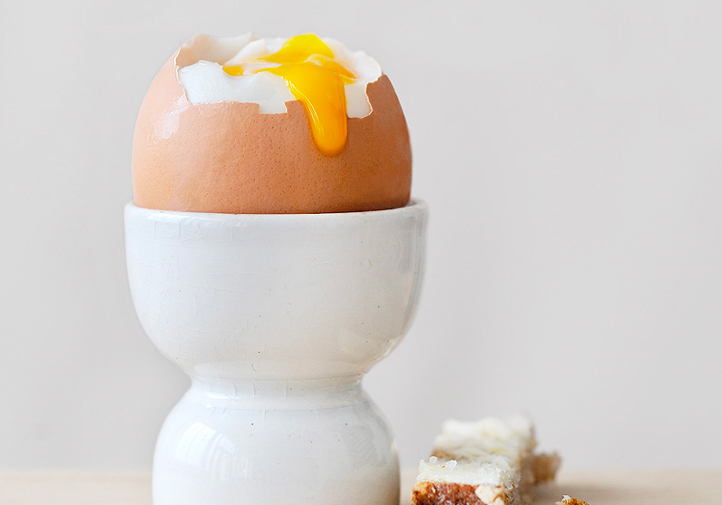

Oeufs à la coque

Description
Cette recette vous apprendra à préparer des oeufs à la coque en seulement 4 minutes pour épater vos convives !
Ingrédients
- Oeufs frais
- Vinaigre ou jus de citron
- Tranches de pain ou de gruyère
Préparation
- Pensez à sortir vos oeufs du réfrigérateur 1h avant la cuisson.
- A l'aide d'une casserole faites chauffer de l'eau puis plongez les oeufs dedans quand celle-ci commence à bouillir.
- Ajoutez un filet de vinaigre ou de jus de citron dans l'eau pour éviter que les oeufs ne se diluent dedans si la coquille venait à casser.
- Après 3 minutes de cuisson, sortez les oeufs de l'eau.
- Pour finir, ajoutez une pincée de sel et dégustez les oeufs accompagnés de mouillettes de pain ou de gruyère !